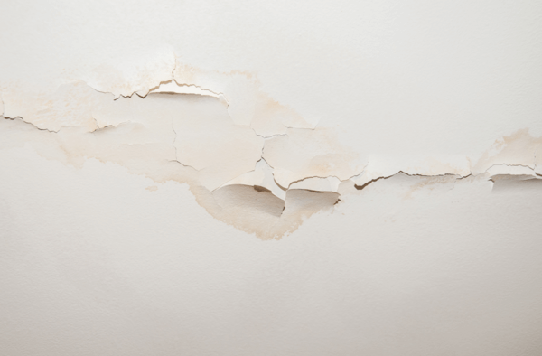

PRECISO DE UM TÍTULO AQUI
Depois de trabalhar com (literalmente) dezenas de produtos em diferentes nichos, analisando funis de vendas e processos de conversão, ao longo dos últimos oito anos.
Percebemos que existem falhas até mesmo em estruturas nos produtos que estão no topo das plataformas.
Seja lançamento, seja perpétuo, em todos os funis existe uma falha prestes a romper. Quando isso acontece não tem funil que aguente por muito tempo.
Estas falhas podem causar danos irreparáveis no faturamento de qualquer empresa, principalmente se estiver em processo de validação de oferta.
Mas ninguém está enxergando o problema, não por negligência, mas por aculturamento do próprio mercado, que cria concreto reforçado com fibras de aço, impedindo perceber o problema dentro do funil.
Hoje mesmo, antes de você chegar até aqui nesta página, recebeu anúncios de cursos de gestão de tráfego, copywriting, como fazer a primeira venda, como vender todos os dias, entre outras tantas informações de forma orgânica que te afastam do entendimento do vazamento escondido do seu funil.
Desde que começamos lá atrás, quando isso aqui era tudo mato, até os dias de hoje, te ensinam a olhar a topo, meio e fundo do funil, com estratégias de tráfego pago e de copy para alcançar plaquinhas e postar notificações de vendas da plataforma.
E assim, você que está fazendo vendas diárias poderia estar lucrando muito mais (isso mesmo, lucrando).
Como também esse mesmo vazamento é o problema que faz com que muitos desistam, depois de investimentos de tempo e dinheiro com poucas ou nenhuma venda.
Seria simples de apontar agora mesmo onde está e como resolver esse problema. Mas esse vazamento está escondido, é inacessível e capaz até de enganar os olhos dos mais experientes players do mercado.
O que fazer então? Destruir todo o funil de vendas para encontrar a raiz do problema? Não! Existe um jeito, que pouquíssimos ensinam, como identificar a falha no seu funil, evitar que o pior aconteça para fazer com que seu lucro aumente.
O resultado do conserto desta falha, antes de romper todo o seu funil de vendas, é o mais puro lucro escalável, sem necessidade de aumento do investimento em tráfego.
Mas para você descobrir onde está a falha do seu funil (sim, é garantido que ela existe) e qual ferramenta você vai precisar pegar para consertar, entra no grupo do Telegram, lá você será avisado como interromper esse vazamento.